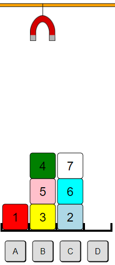

Ratkaisu
Palikat 3 ja 2 asetetaan välissä keskimmäiseen sarakkeeseen.
Palikka 1 vapautetaan siirtämällä muut palikat kahteen keskimmäiseen sarakkeeseen. Jotta lopullinen tavoite saavutetaan suoraviivaisesti, palikat asetetaan keskimmäisiin sarakkeisiin niin, että pienempi numero on isomman numeron päällä: 2 on 3:n päällä ja 4 on 5:n päällä.

|

|
Jotta palikka 1 saadaan siirrettyä oikeanpuoleisen sarakkeen alimmaiseksi, täytyy palikat 5, 4 ja 7 ensin siirtää pois tieltä. Jos laitamme ne suoraan kahteen keskimmäiseen sarakkeeseen, jäävät palikat 2 ja 3 pohjalle, ja niiden siirto oikeanpuoleiseen sarakkeeseen tulee vaatimaan paljon siirtoja.
Tämä ongelma voidaan välttää järjestämällä aluksi palikat 2 ja 3 paremmin: siirrämme palikan 2 palikan 3 päälle. Tämä kuitenkin
vaatii palikan 6 siirtämisen pois tieltä.
Nyt meidän täytyy päättää, siirretäänkö palikka 6 palikan 5 vai 7 päälle.
Jos laitamme palikan 6 palikan 5 päälle, voimme sen jälkeen siirtää palikat 7, 6, 5 ja 4 sarakkeeseen C, josta ne on lopuksi helppo siirtää oikeanpuoleiseen sarakkeeseen.
Edellä kuvattu ratkaisu on kuvattu tässä:
Toinen vaihtoehto olisi siirtää ensin palikka 3 sarakkeeseen C ja sitten palikat 7, 5 ja 4 sarakkeeseen B, jonka jälkeen loppuratkaisu olisi suoraviivainen.
Tämä on tietojenkäsittelyä!
Tämä tehtävä liittyy mm. tietojenkäsittelytieteen käsitteeseen heuristiikka. Aluksi emme ole varmoja, miten toimia, mutta voimme arvioida, että jonkinlaiset askeleet vaikuttavat muita lupaavammilta. Esimerkiksi voimme arvella, ettei palikkaa kannata siirtää sen omaa numeroa pienemmän numeron omaavan palikan päälle.
Jotkut tietokoneohjelmat hyödyntävät heuristisia algoritmeja: sen sijaan, että pyrittäisiin huomioimaan kaikki mahdolliset vaihtoehdot, ohjelma voi suosia "hyviltä vaikuttavia" vaihtoehtoja, kuten tässä esimerkissä sellaisia askeleita, jotka siirtävät palikan vain sellaisen palikan päälle, jonka numero on sen omaa numeroa suurempi.
Katso esim. https://fi.wikipedia.org/wiki/Heuristiikka.